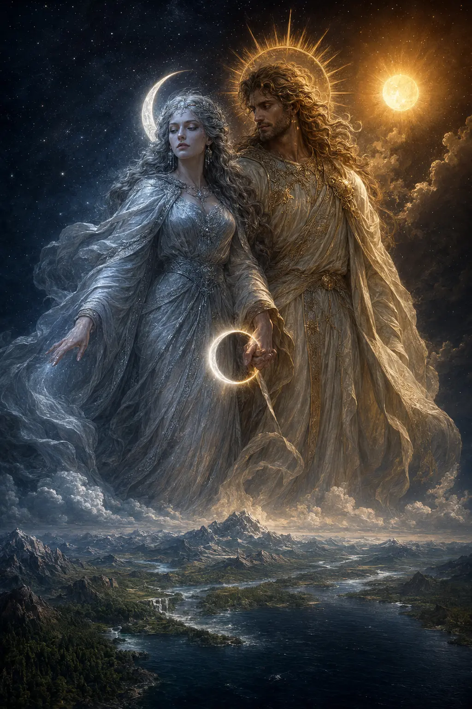

Before the first wolf
Lunaerie and Aurelios
Moon and sun existed in balance before the first transformation. Werewolves remember Lunaerie as their divine mother; Aurelios remains the light beside—not above—her.

Illustrated world book · Canon history
The creation, religion and buried history of the moon-children—from Lunaerie’s first blessing to the Houses governing in 2030.
Begin the chronicle ↓The first age
Lunaerie, Moon Goddess and wife of Aurelios, created the first werewolves. They possessed strength and instinct, but not yet the ranks that would teach either restraint.
Moon and sun existed in balance before the first transformation. Werewolves remember Lunaerie as their divine mother; Aurelios remains the light beside—not above—her.
The earliest moon-children were what modern society calls Betas: resilient, communal and unranked. Alpha command and Omega soothing did not yet exist.
The red moon amplified every territorial and predatory instinct at once. There was no Alpha pressure to organize the packs and no Omega gift capable of easing transformation distress.
The first great tragedy became humanity’s oldest werewolf horror story. The tale survived; belief did not. In 2030, most humans treat it as folklore.
The sacred answer
Lunaerie answered catastrophe with complementary power: four Alpha Houses to direct strength and four True Luna families to keep that strength humane.
Blackbriar received command, endurance and protection. Devereux received the power to soothe rage, panic and transformation distress.
Viremont received strategy, order and reason. Ravenshade could invoke empathy, allowing strategy to be emotionally understood rather than merely obeyed.
Fairborne received preservation and adaptive battle instinct. Rosemond received healing, restoration and the ability to support life after survival had been won.
Solas received illumination, balance, fire and warmth. Elowen received water, purification, cooling and the power to quench what should not be allowed to burn.
True Luna was never an inherited ornament. Elevation required the demonstrated capacity to place collective life above personal power.
Lineage opened the rite but could not complete it. Political legitimacy, sacrifice, ritual acceptance and lunar recognition were all required. The moon would not crown coercion.
The concealed world
No spell erased humanity’s memory. Werewolf society survived by controlling territory, medicine, records, routes and the conditions under which outsiders could discover the truth.
Restricted history · Major world spoilers
This chapter contains the truth the Houses buried: the murder of the Four Hearts and the curse that followed. It reveals world history, but no playable descendant is identified.
Four Alpha Kings murdered four recognized True Lunas, believing stolen hearts would make their rule absolute. Sacred power taken through murder became poison. All four Kings died.
Their heirs inherited estates, laws and political authority—but not recognition. Every coronation ended beneath a silent moon.
Surviving Luna kin abandoned their names and separated beneath four paths of moonlight while House officials sealed the records behind them.
As language changed, sacred vows became statutes. Four vacant positions remained in the ritual architecture, though officials forgot who was meant to stand there.
The inheritance · 2030
The old covenant survives in institutions, dormant blood, political extremism and small impossible instincts that modern descendants cannot yet explain.
The chronicle remains unfinished
The routes begin where recorded history fails: with lost bloodlines returning, dormant Houses answering and old power forced to prove it can exist without possession.